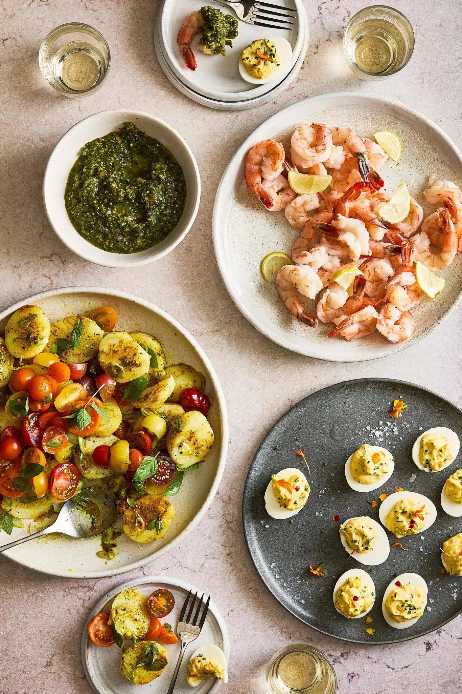

Hello World!
hello World!
Good morning. I dream of buying a beautiful home one day. But with housing costs up, that fantasy is looking less and less likely. So how is Gen Z building wealth? We’re more focused on the stock market than the housing market. Retirement accounts are big, too.
(I recently started contributing to my 401(k) again. Only 40 more years to go!) — Matt Yan
The New York Times… in China. Take a walk through Beijing and you’ll be bombarded with A.I. vending machines and even robots for sale. A robot panda, for example, will cost you $470.
On an outdoorsy note …I went to the beach over the weekend, and I forgot how healing it can be to swim in the ocean. Maybe next time, if I’m feeling brave, I’ll hit one of these wild swimming spots.Speaking of the beach: Jacqueline Kennedy Onassis’ private one in Martha’s Vineyard is now open to the public. It takes a hike to get there.
